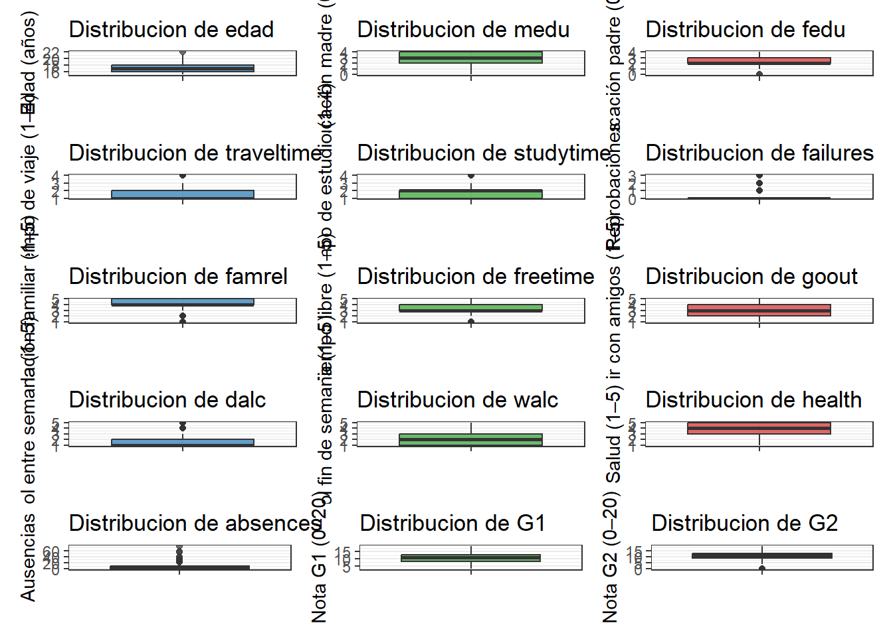

Capítulo 4 Análisis de las variables características (independientes)
# age
datos %>%
summarise(
n = length(age),
media = mean(age),
ds = sd(age),
mediana = median(age),
minimo = min(age),
maximo = max(age),
Q1 = quantile(age, 0.25),
Q3 = quantile(age, 0.75),
IQR = IQR(age)) %>%
mutate(variable = "age") -> var_num_age
# medu
datos %>%
summarise(
n = length(medu),
media = mean(medu),
ds = sd(medu),
mediana = median(medu),
minimo = min(medu),
maximo = max(medu),
Q1 = quantile(medu, 0.25),
Q3 = quantile(medu, 0.75),
IQR = IQR(medu)) %>%
mutate(variable = "medu") -> var_num_medu
# fedu
datos %>%
summarise(
n = length(fedu),
media = mean(fedu),
ds = sd(fedu),
mediana = median(fedu),
minimo = min(fedu),
maximo = max(fedu),
Q1 = quantile(fedu, 0.25),
Q3 = quantile(fedu, 0.75),
IQR = IQR(fedu)) %>%
mutate(variable = "fedu") -> var_num_fedu
# traveltime
datos %>%
summarise(
n = length(traveltime),
media = mean(traveltime),
ds = sd(traveltime),
mediana = median(traveltime),
minimo = min(traveltime),
maximo = max(traveltime),
Q1 = quantile(traveltime, 0.25),
Q3 = quantile(traveltime, 0.75),
IQR = IQR(traveltime)) %>%
mutate(variable = "traveltime") -> var_num_traveltime
# studytime
datos %>%
summarise(
n = length(studytime),
media = mean(studytime),
ds = sd(studytime),
mediana = median(studytime),
minimo = min(studytime),
maximo = max(studytime),
Q1 = quantile(studytime, 0.25),
Q3 = quantile(studytime, 0.75),
IQR = IQR(studytime)) %>%
mutate(variable = "studytime") -> var_num_studytime
# failures
datos %>%
summarise(
n = length(failures),
media = mean(failures),
ds = sd(failures),
mediana = median(failures),
minimo = min(failures),
maximo = max(failures),
Q1 = quantile(failures, 0.25),
Q3 = quantile(failures, 0.75),
IQR = IQR(failures)) %>%
mutate(variable = "failures") -> var_num_failures
# famrel
datos %>%
summarise(
n = length(famrel),
media = mean(famrel),
ds = sd(famrel),
mediana = median(famrel),
minimo = min(famrel),
maximo = max(famrel),
Q1 = quantile(famrel, 0.25),
Q3 = quantile(famrel, 0.75),
IQR = IQR(famrel)) %>%
mutate(variable = "famrel") -> var_num_famrel
# freetime
datos %>%
summarise(
n = length(freetime),
media = mean(freetime),
ds = sd(freetime),
mediana = median(freetime),
minimo = min(freetime),
maximo = max(freetime),
Q1 = quantile(freetime, 0.25),
Q3 = quantile(freetime, 0.75),
IQR = IQR(freetime)) %>%
mutate(variable = "freetime") -> var_num_freetime
# goout
datos %>%
summarise(
n = length(goout),
media = mean(goout),
ds = sd(goout),
mediana = median(goout),
minimo = min(goout),
maximo = max(goout),
Q1 = quantile(goout, 0.25),
Q3 = quantile(goout, 0.75),
IQR = IQR(goout)) %>%
mutate(variable = "goout") -> var_num_goout
# dalc
datos %>%
summarise(
n = length(dalc),
media = mean(dalc),
ds = sd(dalc),
mediana = median(dalc),
minimo = min(dalc),
maximo = max(dalc),
Q1 = quantile(dalc, 0.25),
Q3 = quantile(dalc, 0.75),
IQR = IQR(dalc)) %>%
mutate(variable = "dalc") -> var_num_dalc
# walc
datos %>%
summarise(
n = length(walc),
media = mean(walc),
ds = sd(walc),
mediana = median(walc),
minimo = min(walc),
maximo = max(walc),
Q1 = quantile(walc, 0.25),
Q3 = quantile(walc, 0.75),
IQR = IQR(walc)) %>%
mutate(variable = "walc") -> var_num_walc
# health
datos %>%
summarise(
n = length(health),
media = mean(health),
ds = sd(health),
mediana = median(health),
minimo = min(health),
maximo = max(health),
Q1 = quantile(health, 0.25),
Q3 = quantile(health, 0.75),
IQR = IQR(health)) %>%
mutate(variable = "health") -> var_num_health
# absences
datos %>%
summarise(
n = length(absences),
media = mean(absences),
ds = sd(absences),
mediana = median(absences),
minimo = min(absences),
maximo = max(absences),
Q1 = quantile(absences, 0.25),
Q3 = quantile(absences, 0.75),
IQR = IQR(absences)) %>%
mutate(variable = "absences") -> var_num_absences
# g1
datos %>%
summarise(
n = length(g1),
media = mean(g1),
ds = sd(g1),
mediana = median(g1),
minimo = min(g1),
maximo = max(g1),
Q1 = quantile(g1, 0.25),
Q3 = quantile(g1, 0.75),
IQR = IQR(g1)) %>%
mutate(variable = "g1") -> var_num_g1
# g2
datos %>%
summarise(
n = length(g2),
media = mean(g2),
ds = sd(g2),
mediana = median(g2),
minimo = min(g2),
maximo = max(g2),
Q1 = quantile(g2, 0.25),
Q3 = quantile(g2, 0.75),
IQR = IQR(g2)) %>%
mutate(variable = "g2") -> var_num_g2
tabla_num_indep <- bind_rows(
var_num_age, var_num_medu, var_num_fedu, var_num_traveltime, var_num_studytime,
var_num_failures, var_num_famrel, var_num_freetime, var_num_goout, var_num_dalc,
var_num_walc, var_num_health, var_num_absences, var_num_g1, var_num_g2
) %>%
select(variable, everything())
tabla_num_indep## variable n media ds mediana minimo maximo Q1 Q3 IQR
## 1 age 395 16.6962025 1.2760427 17 15 22 16 18 2
## 2 medu 395 2.7493671 1.0947351 3 0 4 2 4 2
## 3 fedu 395 2.5215190 1.0882005 2 0 4 2 3 1
## 4 traveltime 395 1.4481013 0.6975048 1 1 4 1 2 1
## 5 studytime 395 2.0354430 0.8392403 2 1 4 1 2 1
## 6 failures 395 0.3341772 0.7436510 0 0 3 0 0 0
## 7 famrel 395 3.9443038 0.8966586 4 1 5 4 5 1
## 8 freetime 395 3.2354430 0.9988620 3 1 5 3 4 1
## 9 goout 395 3.1088608 1.1132782 3 1 5 2 4 2
## 10 dalc 395 1.4810127 0.8907414 1 1 5 1 2 1
## 11 walc 395 2.2911392 1.2878966 2 1 5 1 3 2
## 12 health 395 3.5544304 1.3903034 4 1 5 3 5 2
## 13 absences 395 5.7088608 8.0030957 4 0 75 0 8 8
## 14 g1 395 10.9088608 3.3191947 11 3 19 8 13 5
## 15 g2 395 10.7139241 3.7615047 11 0 19 9 13 44.1 Interpretacion de las variables numericas independientes
Edad (age): los estudiantes tienen en promedio 16.7 años, con una mediana de 17 y un rango que va de 15 a 22 años. Esto confirma que la muestra corresponde principalmente a adolescentes dentro del ciclo regular de educación secundaria.
Educación de los padres (medu y fedu): ambas variables tienen valores promedio entre 2 y 3, lo que sugiere que la mayoría de los padres completó como máximo el nivel secundario.
Tiempo de viaje (traveltime) y tiempo de estudio (studytime): la mayoría de los estudiantes dedica entre 1 y 2 unidades en ambas variables (poco tiempo), indicando trayectos cortos al colegio y rutinas de estudio moderadas.
Reprobaciones (failures): el promedio es bajo (0.33) y la mediana igual a 0, lo que implica que la mayoría de los estudiantes no ha repetido cursos, aunque existen algunos casos aislados con varias reprobaciones.
Relaciones familiares, tiempo libre y salidas (famrel, freetime, goout): presentan medias cercanas a 3, lo que denota niveles intermedios de convivencia y socialización.
Consumo de alcohol (dalc y walc): el consumo diario (dalc) es bajo, mientras que el de fin de semana (walc) aumenta ligeramente, patrón esperado en estudiantes adolescentes.
Salud (health): con media de 3.55, la mayoría reporta un estado de salud entre regular y bueno.
Ausencias (absences): la media (5.7) y la desviación alta (8) reflejan un comportamiento muy disperso, indicando que unos pocos estudiantes presentan ausentismo elevado.
Notas parciales (G1 y G2): tienen medias de 10.9 y 10.7, respectivamente, lo cual anticipa una relación fuerte con la nota final (G3)
4.2 Boxplots de TODAS las numéricas independientes
# (Usamos todas las numéricas excepto la respuesta G3)
# 1) age
p1 <- datos %>% ggplot(aes(x="", y=age)) +
geom_boxplot(fill="#1f77b4", alpha=0.7) +
labs(title="Distribucion de edad", y="Edad (años)", x="") + theme_bw()
# 2) medu
p2 <- datos %>% ggplot(aes(x="", y=medu)) +
geom_boxplot(fill="#2ca02c", alpha=0.7) +
labs(title="Distribucion de medu", y="Educación madre (0–4)", x="") + theme_bw()
# 3) fedu
p3 <- datos %>% ggplot(aes(x="", y=fedu)) +
geom_boxplot(fill="#d62728", alpha=0.7) +
labs(title="Distribucion de fedu", y="Educación padre (0–4)", x="") + theme_bw()
# 4) traveltime
p4 <- datos %>% ggplot(aes(x="", y=traveltime)) +
geom_boxplot(fill="#1f77b4", alpha=0.7) +
labs(title="Distribucion de traveltime", y="Tiempo de viaje (1–4)", x="") + theme_bw()
# 5) studytime
p5 <- datos %>% ggplot(aes(x="", y=studytime)) +
geom_boxplot(fill="#2ca02c", alpha=0.7) +
labs(title="Distribucion de studytime", y="Tiempo de estudio (1–4)", x="") + theme_bw()
# 6) failures
p6 <- datos %>% ggplot(aes(x="", y=failures)) +
geom_boxplot(fill="#d62728", alpha=0.7) +
labs(title="Distribucion de failures", y="Reprobaciones", x="") + theme_bw()
# 7) famrel
p7 <- datos %>% ggplot(aes(x="", y=famrel)) +
geom_boxplot(fill="#1f77b4", alpha=0.7) +
labs(title="Distribucion de famrel", y="Relación familiar (1–5)", x="") + theme_bw()
# 8) freetime
p8 <- datos %>% ggplot(aes(x="", y=freetime)) +
geom_boxplot(fill="#2ca02c", alpha=0.7) +
labs(title="Distribucion de freetime", y="Tiempo libre (1–5)", x="") + theme_bw()
# 9) goout
p9 <- datos %>% ggplot(aes(x="", y=goout)) +
geom_boxplot(fill="#d62728", alpha=0.7) +
labs(title="Distribucion de goout", y="Salir con amigos (1–5)", x="") + theme_bw()
# 10) dalc
p10 <- datos %>% ggplot(aes(x="", y=dalc)) +
geom_boxplot(fill="#1f77b4", alpha=0.7) +
labs(title="Distribucion de dalc", y="Alcohol entre semana (1–5)", x="") + theme_bw()
# 11) walc
p11 <- datos %>% ggplot(aes(x="", y=walc)) +
geom_boxplot(fill="#2ca02c", alpha=0.7) +
labs(title="Distribucion de walc", y="Alcohol fin de semana (1–5)", x="") + theme_bw()
# 12) health
p12 <- datos %>% ggplot(aes(x="", y=health)) +
geom_boxplot(fill="#d62728", alpha=0.7) +
labs(title="Distribucion de health", y="Salud (1–5)", x="") + theme_bw()
# 13) absences
p13 <- datos %>% ggplot(aes(x="", y=absences)) +
geom_boxplot(fill="#1f77b4", alpha=0.7) +
labs(title="Distribucion de absences", y="Ausencias", x="") + theme_bw()
# 14) g1
p14 <- datos %>% ggplot(aes(x="", y=g1)) +
geom_boxplot(fill="#2ca02c", alpha=0.7) +
labs(title="Distribucion de G1", y="Nota G1 (0–20)", x="") + theme_bw()
# 15) g2
p15 <- datos %>% ggplot(aes(x="", y=g2)) +
geom_boxplot(fill="#d62728", alpha=0.7) +
labs(title="Distribucion de G2", y="Nota G2 (0–20)", x="") + theme_bw()
(p1 + p2 + p3) /
(p4 + p5 + p6) /
(p7 + p8 + p9) /
(p10 + p11 + p12) /
(p13 + p14 + p15)